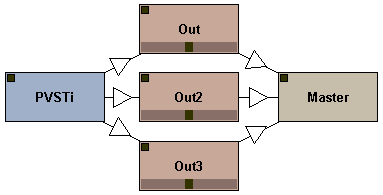
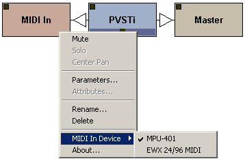
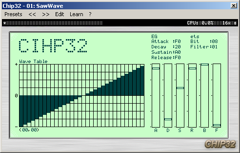

|
Polac VST Loaders for Jeskola Buzz
Version: 1.1.10b (04-Aug-2024)
Author: Frank Potulski
Contact: polac_at_gmx_dot_de
Website: https://www.xlutop.com/buzz
Download (x86)
Download (x64)
| Installation |
|
Since even some more experienced Buzz users might be getting in trouble
with the installation of all .dll's "shipping" within the package, the
files need to be placed like this:
Buzz\vstscan.exe
Buzz\dxscan.exe
Buzz\dxvst.dll [DX/DXi loader]
Buzz\pbuzz.dll [BUZZ loader]
Buzz\ppsy.dll [Psycle loader]
Buzz\Gear\Machines.dll
Buzz\Gear\Generators\Polac VSTi 1.1.dll [VST Instrument Loader]
Buzz\Gear\Generators\Polac MIDI Bus II.dll [->send midi from vst to other buzz machines]
Buzz\Gear\Effects\Polac VST 1.1.dll [VST Effect Loader]
Buzz\Gear\Effects\Polac Out II.dll [for multiple output support]
Buzz\Gear\Effects\Polac MIDI In.dll [->for additional midi in devices]
Buzz\Gear\Vst\midivst.dll [MIDI Out support, ASIO waveout required]
Buzz\Gear\Vst\dmovst.dll [DMO loader]
Buzz\Gear\Vst\ladspavst.dll [Ladspa loader]
Important: without the Machines.dll the loaders won't work properly!
You've got to modify your Buzz\Gear\index.txt in order to access VST Plugins from the right-mouse click menu.
*Polac VSTi 1.1, [PVSTi]VST Instruments
*Polac VST 1.1, [PVST]VST Effects
The Polac Out II.dll and Polac MIDI In doesn't need a specific index.txt entry in order to work.
Once you're done with this procedure, you're almost done. The only thing
left to do is telling *BOTH* Polac Machines (VST & VSTi) which
directories are scanned for vst plugins. Just place an instance of BOTH
loaders into your Buzz setup, right-click them and choose "Preferences"
from the menu. A new window will open and ask you to specify your VST
plugin resources. The loaders will scan the choosen paths recursive
(invoking subdirectories) once you're done with setting things up and
press the "OK" button. The procedure stated above needs to be done ONCE
for BOTH loaders. If you succeeded you'll now be able to load your VST
plugin of choice from within the usual right-click menu in the machine
view.
Congrats! You're done with the installation.
|
| Parameters and Attributes |
|
A short description of all parameters and
attributes. Many of these parameters and attributes can also be accessed
in the settings view(just open the loader window).
|
| Global Parameters |
| Dry Out |
If you are using the VST Loader, this parameter controls the dry output volume. |
| Wet Out |
This parameter controls the wet output volume. |
| Panning |
Sets the panning position of the Wet Out signal. |
| Global Command |
Eleven global commands available:
- 00: Transpose
- 01: Tempo Sync
- 02: Trigger Seq
- 03: Bypass
- 04: Morph: Prg A
- 05: Morph: Prg B
- 06: Global Inertia
- 07: Vel Commands
- 08: Dly Commands
- 0E: Sysex
- 0F: RPB
|
| Global Command Value |
Sets the global command value. You can find a detailed global command description below. |
| Program |
Selects a program of a VST(i). Only visible in pattern view. |
| Track Parameters |
| Note |
Note. |
| Note Velocity |
Sets the velocity of a note. |
| Note Delay |
Position of the note in a row/tick. |
| Note Cut |
Cuts the note between two ticks.
|
| Track Command |
22 track commands are available:
- ..: FT2-Style
- 00: Retrigger
- 01: ArpUp
- 02: ArpDown
- 03: Legato Mode
- 04: Chord
- 05: Slide Up/Down
- 06: LFO Trigger
- 07: LFO
- 08: LFO Settings
- 09: MIDI Message
- 0A: Mute Track
- 0B: Inertia
- 0C: All Notes Off
- 0D: Program Change
- 0E: Bank Select
- 0F: Ornament
- 10: Automation Delay
- 11: Psycle Note Command
- 12: Note Off Velocity
- 13: RPN/NRPN #
- 14: Arp Chord
- 15: Note Expression Track(VST3)
- 16: Mirror Param Value
- 17: Param Value Slope
- Cx: Global Commands
|
| Track Command Value |
Sets the track command value. You can find a detailed track command description below. |
| Track Parameter |
Sets the VST parameter you want to control. Also Pitchbend, MIDI CC, Mono/Polyaftertouch can be selected. |
| Track Parameter Value |
Sets the value of the controlled parameter. |
| MIDI Channel |
MIDI Channel selection. |
| Attributes |
| MIDI In Channel |
Sets the receiving MIDI Channel(0=all). |
| MIDI Out Channel |
Specifies transmitting MIDI Channel(0=all). |
| MIDI Velocity Slope |
Velocity sensitivity. |
| MIDI Velocity Min |
Sets the velocity low value. |
| MIDI Velocity Max |
Sets the velocity high value. |
| MIDI Transpose |
Transposes the incoming MIDI notes. |
| MIDI: Receive Note |
Enables/disables MIDI note receipt. |
| MIDI: ReceiveCC |
Enables/disables MIDI CC receipt. |
| Quantisation |
Note quantisation while recording.
0=OFF
1=1
2=1/2
3=1/3
4=1/4
5=1/5
6=1/6
7=1/8
8=1/12
9=1/16
10=1/32
11=1/64
|
| Quantisation Note Off |
Enables/disables the note off
quantisation. Quantisation must be set before, otherwise enabling note
off quantisation will affect nothing. |
| Record Note Off |
Enables/disables note off recording. |
| Keyzone Lo |
Keyzone Lo. |
| Keyzone Hi |
Keyzone Hi. |
| Velocityzone Lo |
Velocityzone Lo. |
| Velocityzone Zone Hi |
Velocityzone Zone Hi. |
| Global Commands |
| Pattern Transpose |
00 00xx
xx(0-30): Transpose in semitones (x-24). |
| Tempo Sync |
01 xxxx
xxxx(0-200):
0: Loader sends Buzz tempo to VST(i)
1-200: Loader sends selected tempo to VST(i)
|
| Trigger Seq |
02 xxxx
xxxx(0-FFFE):
0: Stops sequence playback.
1-FFFE: Triggers sequence on measure x-1.
Note: This note effect is useful for a couple like Reaktor or
Fruityloops. You can jump to a certain song position with this command.
|
| Bypass |
03 000x
x(0-1):
0: Bypass disabled
1: Bypass enabled |
| Morph: Prg A |
04 xxxx
xxxx(0-FFFE):
Sets program A(for program morphing purpose). You can morph programs in the track parameter column(30FB: Morph Programs). |
| Morph: Prg B |
05 xxxx
xxxx(0-FFFE):
Sets program B(for program morphing purpose). You can morph programs in the track parameter column(30FB: Morph Programs). |
| Global Inertia |
06 xxxx
xxxx(0-FFFE):
Sets the inertia for all tracks(x/256 ticks). |
| Vel Commands |
07 0xyy
x(0-2):
0: Humanize Velocity
yy(0-7F): controls humanize amount
1: Quantize Velocity
yy(0-0F): quantises to velocity/y
2: Constant Velocity
yy(0-7F): sets velocity constant to y
|
| Dly Commands |
08 xxyy
xx(00,01,02,04,1x,2x):
00: Humanize Note Delay
yy(0-7F): controls humanize amount
01: Quantize Note Delay
yy(0-0F): quantises to tick/y
02: Constant Note Delay
yy(0-FF): delays notes for y/16 tick(s)
04: Tick Affinity
yy(0-FF): controls the note delay affinity
1x: Shuffle
x(0-F): shuffle step x*2 tick(s)
yy(0-FF): shuffle amount
2x: Constant Note Delay II
xyy(0-FFF): delays notes for y/32 tick(s)
|
| Track Commands |
| FT2-Style |
.. xxyy
xx(0-FF): Command
yy(0-FF): Argument
Protracker/FT2 style commands
more details
|
| Retrigger |
00 xy0z
x(0-F): Retriggerlength
y(0-1):
0: Retriggerlength 1/(x+1) Ticks
1: Retriggerlength x+1 Ticks
z(0-F): Number of Retriggers
Note cut still influences here the note length, relative to retriggerlength/number of retriggers.
|
|
ArpUp
|
01 abyz
a(0-F): Arpeggiolength a+1 Ticks
b(0-F): Number of steps
y(0-F): Second Note
z(0-F): Third Note
Note Cut still influences here the note length, relative to arpeggiolength/number of steps.
|
|
ArpDown
|
02 abyz
a(0-F): Arpeggiolength a+1 Ticks
b(0-F): Number of steps
y(0-F): Second Note
z(0-F): Third Note
Note Cut still influences here the note length, relative to arpeggiolength/number of steps.
|
|
Legato Mode
|
03 xxxx
xxxx(0-FFFE): Note Overlap
Useful for VSTi's with glide/portamento mode. If this Track Command is set, the previous note glides to the current.
|
|
Chord
|
04 wxyz
w(0-F): Second chord note(unused if 0).
x(0-F): Third chord note(unused if 0).
y(0-F): Fourth chord note(unused if 0).
z(0-F): Fifth chord note(unused if 0).
Quite useful for some lazy people.
|
|
Slide Up/Down
|
05 xxyy aaaa bbbb
xx(0-7F): slide start point.
yy(0-7F): slide end point.
aaaa(0-30FF): the param you want to slide
bbbb(0-7FFF): slide speed b/256 tick.
Slides the selected track parameter.
|
|
LFO Trigger
|
06 xxyy
xx(0-FF): LFO Rate
yy(0-FF): LFO Depth
Starts the LFO,resets LFO.
|
|
LFO(free run)
|
07 xxyy
xx(0-FF): LFO Rate
yy(0-FF): LFO Depth
Starts the LFO without resetting.
|
|
LFO Settings
|
08 0xyz
x(0-f): LFO Phase/Offset
y(0-1): LFO Mode
0: Hz
1: Tick
z(0-5): LFO Shape
0: Sine
1: Square
2: Saw Up
3: Saw Dowm
4: Triangle
5: LFO Shape: Random
Track-dependant LFO Settings.
|
|
MIDI Message
|
09 xxyy
xx(0-FF): MIDI Message #
00-7F: CC 0-7F
80-FD: user-defined MIDI Message
FE: Pitch Bend Range
FF: Pitch Bend
yy(0-FF): Value
The MIDI Messages can be edited: ->Default Valus->Midi Messages.
|
|
Mute Track
|
0A 000x
x(0-1): mute/unmute track
Mutes/unmutes the track, Mute track will only disable the note
playback on the track, the parameter automation is not influenced by
this track command.
|
| Inertia |
0B xxxx
xxxx(0-FFFE): Track-dependant Inertia, x/256 Ticks. |
| All Notes Off |
0C 000x
x(0-1): Sends a note off for all active pattern notes.
|
| Program Change |
0D 00yy
yy(0-7F): Program Change |
| Bank Select |
0E xxyy
xx(0-7F): MSB
yy(0-7F): LSB |
| Ornament |
0F x0yz
x(0-1): Mode selection
y(0-F): Length tick / ( 2 << y )
z(0-F): Relative note |
| Automation Delay |
10 xxxx
xxxx(0-FFFE): Sets the automation delay position in a tick, if set to 0 the parameter automation syncs to the note delay.
Note that the parameter inertia does not work if you use this command.
|
| Psycle Note Command |
11 xxyy
Special note command for psycle plugins only:
xx(0-FF): psycle command
yy(0-FF): psycle argument
|
| Note Off Velocity |
12 00xx
xx(0-7F): Note off velocity
|
| RPN/NRPN # |
13 xxxx
xxxx(0-FFFF): RPN/NRPN #
|
| Arp Chord |
14 wxyz
w(0-F): Second chord note(unused if 0).
x(0-F): Third chord note(unused if 0).
y(0-F): Fourth chord note(unused if 0).
z(0-F): Fifth chord note(unused if 0).
|
| Note Expression Track(VST3) |
15 xxxx
xxxx(0-FFFF): Track number.
|
| Mirror Param Value |
16 000x
x(0-1): Mirror param value on/off
|
| Param Value Slope |
17 xxxx
xxxx(0-FFFE): Slope(0x8000=linear,<0x8000=log,>0x8000=exp)
|
| Global Commands |
Cx yyyy
Cx(0-9): Global command selection.
yyyy(0-FFFE): See above how to use the respective global command.
Useful if you want to use more than one global command in a row. |
| Protracker/FT2 Style Commands |
| Arpeggio |
00 xy
On subdivision step 0, the original note will be played. Step one will
play the original note+x halftones. Step two will play the original
note+y halftones. Step three will restart the process.
|
| Slide Up |
01 xx
Slide up xx notches
|
| Slide Down |
02 xx
Slide down xx notches
|
| Tone Portamento |
03 xx
If xx is zero, keep portamento'ing
|
| Vibrato |
04 xy
x - speed
y - depth
If either is zero, use previous value
|
| Slide Panning |
05 xy
x - amount to slide panning left
y - amount to slide panning right
|
| Autopan |
06 xy
x - speed
y - depth
If either is zero, use previous value
|
| Tremolo |
07 xy
x - speed
y - depth
If either is zero, use previous value
|
| Set Panning Position |
08 xx
0=left, 80=middle, FF=right
|
| Volume Slide |
0A xy
x - amount to slide volume up
y - amount to slide volume down
|
| Set Volume |
0C xx
FF=max
|
| Subdivide Amount |
0F xx
This is the same as the Protracker Fxx command, except it doesn't
actually change the speed of the song, only the speed of the track's
effects. If the subdivide amount is higher, effects will be updated more
often, making them run faster. The default value is 6.
|
| Probability |
10 xx
xx - Probability for note being played. 01=will almost certainly not be played, 80=50%, FF=almost certain
|
| Auto Shuffle |
13 xy
x - Ticks to shuffle. 2 shuffles every other step, 3 every third step and so on.
y=Shuffle amount. 0=none, F=almost a full tick. change the subdivision amount to, say, 10 for greater precision.
|
| Randomize Volume |
14 xx
xx - Maximum amount the volume will be randomized
|
| Randomize Delay |
15 xx
xx - Maximum number of subdivision steps the note will be delayed
|
| Randomize Pitch |
16 xx
xx - Maximum number of notches the pitch will be randomized
|
| Combined note delay + cut |
18 xy
x - The subdivision step to trigger the note
y - The subdivision step to release the note
|
| Sustain Pedal |
19 xy
y - Subdivision step to trigger command
x=1 - Depress sustain pedal
x=2 - Release sustain pedal
|
| Filter Cutoff |
20 xx
Set filter cutoff
|
| Slide Filter Cutoff Up |
21 xx
Slide filter cutoff up xx notches
|
| Slide Filter Cutoff Down |
22 xx
Slide filter cutoff down xx notches
|
| Filter Cutoff LFO Type |
23 0x
x - 0 - sine, retrig at notestart
x - 1 - saw, retrig at notestart
x - 2 - square, retrig at notestart
x - 4 - sine, don't retrig at notestart
x - 5 - saw, don't retrig at notestart
x - 6 - square, don't retrig at notestart
|
| Filter Cutoff LFO |
24 xy
x - speed
y - depth
If either is zero, use previous value
|
| Filter Resonance |
28 xx
Set filter resonance
|
| Slide Filter Resonance Up |
29 xx
Slide filter resonance up xx notches
|
| Slide Filter Resonance Down |
2A xx
Slide filter resonance down xx notches
|
| Filter Resonance LFO Type |
2B 0x
x - 0 - sine, retrig at notestart
x - 1 - saw, retrig at notestart
x - 2 - square, retrig at notestart
x - 4 - sine, don't retrig at notestart
x - 5 - saw, don't retrig at notestart
x - 6 - square, don't retrig at notestart
|
| Filter Resonance LFO |
24 xy
x - speed
y - depth
If either is zero, use previous value
|
| Not Cut |
DC xx
Releases note
|
| Set Glissando |
E3 0x
0=Off, 1=On
|
| Vibrato LFO Type |
E4 0x
x - 0 - sine, retrig at notestart
x - 1 - saw, retrig at notestart
x - 2 - square, retrig at notestart
x - 4 - sine, don't retrig at notestart
x - 5 - saw, don't retrig at notestart
x - 6 - square, don't retrig at notestart
|
| Panning LFO Type |
E6 0x
x - 0 - sine, retrig at notestart
x - 1 - saw, retrig at notestart
x - 2 - square, retrig at notestart
x - 4 - sine, don't retrig at notestart
x - 5 - saw, don't retrig at notestart
x - 6 - square, don't retrig at notestart
|
| Tremolo LFO Type |
E7 0x
x - 0 - sine, retrig at notestart
x - 1 - saw, retrig at notestart
x - 2 - square, retrig at notestart
x - 4 - sine, don't retrig at notestart
x - 5 - saw, don't retrig at notestart
x - 6 - square, don't retrig at notestart
|
| Retrig Note |
E9 xx
xx - subdivision count at which note is retriggered
|
| Fine Volume Slide Up |
EA xx
Fine volume slide up
|
| Fine Volume Slide Down |
EB xx
Fine volume slide down
|
| Note Cut |
EC xx
Releases note
|
| Note Delay |
ED xx
Delay notestart for xx subdivision steps
|
| Fine Panning Slide Left |
EE xx
Fine panning slide left
|
| Fine Panning Slide Right |
EF xx
Fine panning slide right
|
| Set Pitch Up Slope |
F1 xx
80=linear
|
| Set Pitch Down Slope |
F2 xx
80=linear
|
| Set Volume Up Slope |
F3 xx
80=linear
|
| Set Volume Down Slope |
F4 xx
80=linear
|
| Set Panning Slope |
F5 xx
80=linear
|
| LFO Rate Mode |
FB 0x
Set LFO rate behaviour:
0=Protracker
1=Matilde
|
| Reset Panning Position |
FC 0x
Reset panning position on note
0=Off
1=On
|
| CC Mode |
FE 0x
If enabled 14bit gets outputted otherwise 7bit(default)
|
| Pitch Bend Semitones |
FF xx
Set pitch bend resolution, default is 24 semitones(required to get the tone portamento command to work properly).
|
| Shortcuts |
|
There are some shortcuts defined.
|
| Shortcuts |
| ` |
Switch between the buzz mainwindow and the previously active window. |
| CTRL+SHIFT |
Center loader window. |
| CTRL+D |
Stores the current program to favorites. |
| Left/Right |
Next/previous program in bank. |
| CTRL+Left/Right |
Next/previous program via midi program change. |
| CTRL+Up/Down |
Midi bank select. |
| /,* |
Midi Transpose: Octave up/down. |
| +,- |
Midi Transpose: Semitone up/down. |
| CTRL+LDBLCLICK |
On machine: Opens GUI view. |
| SHIFT+LDBLCLICK |
On machine: Opens settings view. |
| CTRL+SHIFT+LDBLCLICK |
On machine: Opens parameter view. |
| ALT+LDBLCLICK |
On machine: Opens buzz parameters. |
| LDBLCLICK |
Minimizes loader window. |
| RDBLCLICK |
Parameter list: Fits parameter list to screen. |
| CTRL+SPACE |
Closes all loader windows except the active one. |
| ESCAPE |
Closes active loader window. |
| SHIFT |
Parameter list: enables the parameter fine adjustment. |
| TAB |
Windows styled cycling through all opened loader instances. |
| CTRL+TAB |
Cycles through the views of a loader window. |
| CTRL+Return |
Activates/Deactivates the overwrite mode. |
| F2 |
GUI view. |
| F3 |
Paramlist view. |
| F4 |
Settings view. |
| CTRL+F8 |
Bypass On/Off. |
| F9 |
Enables/disables MIDI CC receipt. |
| F10 |
Enables/disables MIDI note receipt. |
| F11 |
Show/Hide all loader windows. |
| F12 |
All Notes Off(MIDI Reset). |
| Loader Window and Menus |
|
If you have successfully loaded a plugin you can open the loader window.
Three views are available: GUI view, the paramlist view and the
settings view. There are several menus:
|
| Machine Menu |
| Open... |
Loads a plugin via open dialog. |
| Plugins> |
All vst plugins which could be found in the selected directories. |
| Editor... |
Opens the loader window. |
| MIDI Send... |
There are a couple of plugins
which are midi only, which means they are producing midi events. These
events can be sent to other machines to control them with these
events(Trollo, QuickKeys, MoCon...-plugins). |
| Preferences... |
Default settings for attributes and a couple of other things. Here you can configure the loader startup values. |
| About... |
Blabla... |
| Presets Menu |
| Load... |
Loads a complete bank or a single program. You can import presets from Cubase, Logic as well as Orion. |
| Save... |
Saves a complete bank or a single program. You can save the presets as FXP or FXB. |
| Rename... |
Renames the active program. |
| Copy |
Makes a copy of the active program. |
| Paste |
Pastes a previously copied program to the active program. |
| Preset Factory... |
You're too lazy, stupid or not
just in the mood to create a complex preset yourself? You don't need to -
let the Preset Factory handle that for you! |
| Show Preset Numbers |
Bank preset numbering on/off. |
| Prefer Builtin/Favorites |
Defines what is displayed in the
program menu by default. If set to 'builtin' you'll see the default bank
of a plugin, otherwise the programs of your favorites(Organize...). |
| Organize... |
Opens a preset manager where you can manage your favorite programs. |
| Store... |
Stores the selected program to the favorites(Shortcut: CTRL+D). |
| Programs |
All programs of the bank or
favorites are listed here, depending on what is set as default. A couple
of plugins will have its own program management, therefore these
programs cannot be displayed here. |
| Learn Menu |
| Auto Learn |
If enabled, all touched controls
in the vst gui get assigned to buzz sliders - track by track, one after
another (until the last available track slider has been reached). |
| Learn MIDI CC |
Necessary to make the loader recognize vst plugins which use the Midi CC method for controller automation. |
| Clear Params |
Wipes all learned parameters. |
| Save as Default |
Writes an .dat containing all learned parameters of a plugin. These settings will be automatically used if you load the plugin. |
| Restore Default |
Reverts all changes to the saved defaults. |
| Learned Parameter List |
Shows the list of all available tracks and their learned VST parameters. |
| View Menu |
| GUI |
Shows the VST plugins' gui (default view). |
| Parameter List |
A schematic listing of all available VST plugin parameters. |
| Settings |
All loader settings (as found in
the machine attributes) can be found here as well besides a number of
track dependant things (track selector, LFO...). |
| Plugin Information |
Opens dialog containing some informations about a plugin. |
| MIDI: Receive Note |
Enables/disables the MIDI note receipt. |
| MIDI: Receive CC |
Enables/disables the MIDI CC receipt. |
| Bypass |
Bypass on/off. |
| All Notes Off |
Sends a "all notes off" to plugin. |
| GUI View |
|
The default view once a plugin is loaded into the Polac machines. A double-right-click on a VST or VSTi instance will open it.
|
| Parameter View |
|
A list view showing all parameters of the loaded VST plugin. All
parameters can be edited here as well. Use SHIFT+Leftmouse for fine
tuning values. To the left of each paraemeter you'll find a button. You
can select/deselect here a parameter for randomizing or morphing
purpose(preset factory).
|
| Settings View |
Surely the most important section of the loader besides the vst gui. There are a couple of sections here:
Track Settings:
- Track Selector: Here you can select a track for record, mute a track.
-Leftclick: (de)selects track for recording
-DoubleLeftclick: (de)selects all tracks
-CTRL+Leftclick: (un)mutes track.
-CTRL+DoubleLeftclick: (un)mutes all tracks
-Rightclick: selects active track(track settings)
- Overwrite: When enabled, the pattern data will be
overwritten during recording. You can optionally keep the automation or
non-automation data(rightclick the overwrite button). Overwrite can be
optionally toggled via CC64, quite useful if using a foot switch.
- Inertia: Used in order to smooth parameter
automation changes. 0.00 ticks might occur steppy (depending on the
plugin), above 1 isn't very responsible for live purposes but can be
used for making long parameter movements easier. A good, responsive
default is 0.50 ticks.
- LFO Shape: Available waveforms as LFO Shape:
-Sine
-Square
-Saw Up
-Saw Down
-Triangle
-Random
- LFO Mode: The track LFO's can operate with a HZ or tick related measure.
- LFO Phase: Sets the starting point for each LFO.
- Assigned Parameter/CC: Shows the list of all
available vst plugin parameters. Can be used to assign vst parameter to a
track parameter by simply selecting it. The value slider can be
directly linked to a midi cc as well as its value range can be
customized. A right-mouse click on it opens the regarding menu.
- Midi Channel: Specifies the Midi Channel that is used for each track (!ATTENTION! Not to be confused with the Global Midi Channels!).
MIDI Settings:
- In Channel: MIDI Channel that is beeing used by Loader instance to listen for incoming MIDI events.
- Out Channel: MIDI Channel that is used by Loader to sent MIDI events.
- Transpose: Transposition of incoming notes by value(note).
- Velocity Slope: Velocity sensitivity.
- Velocity Min: Sets the minimum velocity.
- Velocity Max: Sets the maximum velocity.
- Quantize: Determines the quantisation raster of
incoming midi events for recording and ONLY for recording. Changes made
after recording don't have an effect.
- Quantize NoteOff: If this switch is enabled, NoteOff events are quantized as well.
- Record NoteOff: Enables/disables note off recording.
- MIDI Mode: Mode A can be referred as "standard"
mode. Incoming MIDI events will be used by all VST Loader instances
which have Midi enabled. Mode B will only enable Midi for the
highlighted VST Loader instance.
Global Settings:
- Dry Out(PVST only)
- Wet Out
- Panning
- Transpose: Global transposition of all notes for playback.
- Tempo Sync: If Buzz is enabled, Buzz' master tempo
will be used for the VST loader tempo syncronisation. In case you're
working with tempo changes (e.g. shuffle using master tempo changes)
it's quite handy to lock the loaders' tempo manually.
- Link Dry/Wet(PVST only): If enabled, dry out and wet out can be controlled with only one slider.
Miscellaneous Settings:
- Automation Mode:
-Normal: if activated, the loader records automation data as long as you move the fader/knob.
-Touchfader: if activated, the loader records automation data as long as the fader/knob is held, even if you stop the movement.
- Virtual Keyboard: If enabled, the pc keyboard can be used to send midi notes to the vst plugin.
- MIDI Mode: Mode "User-Defined" can be referred as
standard mode. Incoming MIDI events will be used by all VST Loader
instances which have Midi enabled. Mode "Active Editor" will only enable
Midi for the highlighted VST Loader instance. Mode "All Editors" will
enable Midi for all vst's with opened editors.
- Refresh Button: use this to update the settings view.
- Morph: Here you can select the programs for morph
purpose. If some programs are selected you can select "Morph Prgs" in
the "Track Parameter" combo box. The slider movement can be recorded to
track parameter colums now.
|
| How To Use... |
|
Some hints:
|
| Multi-out VST's |
|
If a VST has multiple outputs, you can use the Polac Out II to access
these outputs. The picture below shows how you have to connect the
machines. Polac Out II will detect the connected machine. Doubleclicking
this machine will open a dialog showing up all available outputs of the
connected VST.
|

| Multi-in VST's |
|
If a VST has more than two inputs, a dialog will automatically pop up
when a new machine is connected to the loader. All available inputs are
listed in this dialog, you only have to choose the appropiate inputs.
|

| Additional MIDI In Devices |
|
You can use the Polac MIDI In machine to make other machines able to
receive midi data also from other midi devices than the buzz default
midi device. See below how to use this machine:
|

| Buzz/Psycle wrappers |
|
To use them inside the loader simply place some buzz or psycle machines
in one of your vst directories. Alternatively you can create a shortcut
of a machine via explorer and move the shortcut to a vst directory. The
machines will be detected by the loader and can be selected via pluign
menu later on.
|


| Oversampling/Bridging |
|
It's possible to load a plugin in oversampling or bridging mode, for
oversampling just hold CTRL key, for bridging hold the SHIFT key while
loading(or enable one of these features per plugin via preferences
dialog). Note that bridging means that a plugin will run in a separate
process.
|

| MIDI-generating VST's (Midi Send...) |
|
In the loader rightclick menu is an entry called "MIDI Send". A couple
of plugins are generating midi. These midi events can be directly sent
to other loader instances to control them with these midi events. Only
if a plugin is a "midi generator", the midi send dialog will shop up
other loader instances where to send the events.
|

| Parameter Automation |
Up to 128 VST parameters can be controlled simultanously, depending on
the number of tracks. VST parameters/MIDI CCs can be assigned in this
way:
- Open the GUI/Params window.
- (a) Open the Learn menu and select a track you want to assign
with a VST parameter/MIDI CC. If you want to learn a MIDI CC also
enable "Learn MIDI CC".
(b) Open the Learn menu and select Auto Learn. If you want to learn a MIDI CC also enable "Learn MIDI CC".
- Now you only have to move a Fader/Knob/Button, in most cases
the parameter is learned now. Alternatively you can move a
Controller/Pitchbend of your masterkeyboard or faderbox to learn them.
Several Notes:
- there are a couple of plugins that cannot be assigned to a track in
this way. So you have assign the VST parameters
manually(=>Parameters...).
- you can unbind a parameter by rightglicking on a learned parameter in the parameter list. |
| Midi Message Editing |
|
Midi messages can be used via track command 07. Predefined midi messages are:
00-7F: MIDI CC
FE: Pitch Bend Range
FF: Pitch Bend
Messages [80] to [FD] are undefined. To edit the midi messages,
right-click the loader, open the Default Values... dialog, click the
midi message button. This will open the midi message.ini in your
texteditor. A short example how to edit the midi message.ini:
All is numbered from [00]-[FF], here we are editing midi message [FE].
[FE] Bn 64 00,Bn 65 00,Bn 06 xx //Pitch Bend Range
n: A byte with n will be combined with the track midichannel
xx: the variable value
//: Comment.
Each byte has to be separated from the other bytes with either a space, tab or comma. Three bytes will give one midi event. |
| Preset Factory |
You're too lazy, stupid or not just in the mood to create a complex
preset yourself? You don't need to - let the Preset Factory handle that
for you!
The Preset Factory allows you to create new sounds in 3 ways:
- Morphing:
The morph slider will, generally spoken, take preset A, B and linearly
blend between both. If there wasn't the Mode setting above. "ALL" will
really just do the blend-job, but then it get's interesting again.
"Selected" will only touch the parameters which are selected in the
parameter list (F3). "Not selected" does the same with all non-selected
parameters. "Learned" only affects the vst parameters that have been
assigned to buzz parameters. "Not learned" vice versa.
- Genetics ("Breed"):
The genetics slider determines the amount of vst parameters that will be
taken from both presets. It doesn't change the preset unless you press
the "Breed!" button. Once it's pressed, it takes the specified amount of
(random!) vst parameters to create a new sound. Of course, you can
point out which parameters may be used for this procedure using the Mode
as in the morphing.
To make it easier for you:
E.g. your plugin has got 10 vst parameters and you don't move the
genetics slider, 5 parameters from both selected presets will remain in
the new preset. Which exact parameters are used is Breed's choice
(random).
- Randomize:
Good old-fashioned patch randomizing. You can specify the amount of
randomization by enabling the % range. The Mode is enabled for usage
with randomizing as stated above.
|
| Preferences |
|
Here you can configure the loader preferences, which means that the
loader will use these settings each time you start a new loader
instance. Also the vst directories can be configured here. The
preferences dialog can be accessed via the machine menu(rightclick on
loader). There are three tabs, two for global settings which will have
effect for all plugins and one for settings done per plugin:
Global I:
Here one can set the default values
for the loader attributes, also some other things can be defined here
such as inertia, the number of tracks, midi or automation mode etc...
Global II:
Select your vst directories and
some settings related to the dx/buzz loader, also an option to select
the PVST data folder, 'My Documents' is set by default.
Plugin:
Some plugin-specific settings:
- VST Keys: If enabled the loader sends keystrokes to the plugin.
- Fixed Length Processing: The loader processes
samples with a constant blocksize, note that this will delay the output
for 256 samples. Only a couple of plugins will need this
enabled(Spinaudio/PPG).
- Save Bank To Song: All Programs of a VST(i) are saved to the buzzsong.
- Save Prg To Song: Only the selected program of a
VST(i) is saved to the buzzsong. A couple of plugins will cause problems
on bank saving(Delay Lama,FFX4), so this has to be enabled.
- Use sizeWindow(): Disable this if a gui does not resize correctly.
- Stereo Fix: some plugins will remain mono if this one is not enabled(Cyanide).
- Disable shortcuts/virtual keyboard. Disable if a plugin has its own keyboard handling.
|
| Thanks To... |
Thomas Potulski - for programming help and tips
Ronny Pries - for lots of ideas and help, help on this manual, beta testing, for being sort of project manager ;)
oskari - for buzz and newbuzz help
CyanPhase - for the great buzz tutorials
usr - for suggestions and help with the machines.dll
Cameron Bonde - for tons of feature suggestions and beta testing
CyanPhase - for the great buzz tutorials
ld0d - for some help on the vst menus in the machine menu
djlaser - for tips and suggestions
P. DooM - for the buzzhack sourcecode
Also big thanks to all on the beta list:
.tOm, ps, Wayfinder, soma, WakaX, mute, btd, Rolf Kohl, Mva, Boneyhands and the rest I forgot here.
|
| Legal Notice |
|
These buzzmachines are FREEWARE. They may be redistributed freely, as
long as the .dll files are provided with this documentation. You're not
authorized to sell them by any way.
VST and ASIO are trademarks of Steinberg Soft- und Hardware GmbH
|
|
|
|